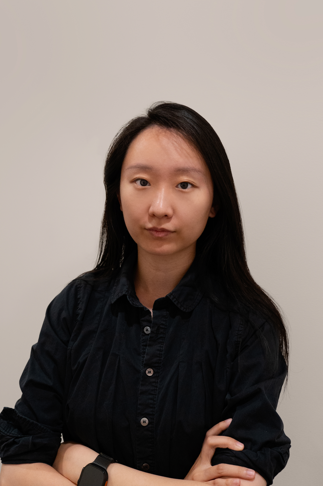
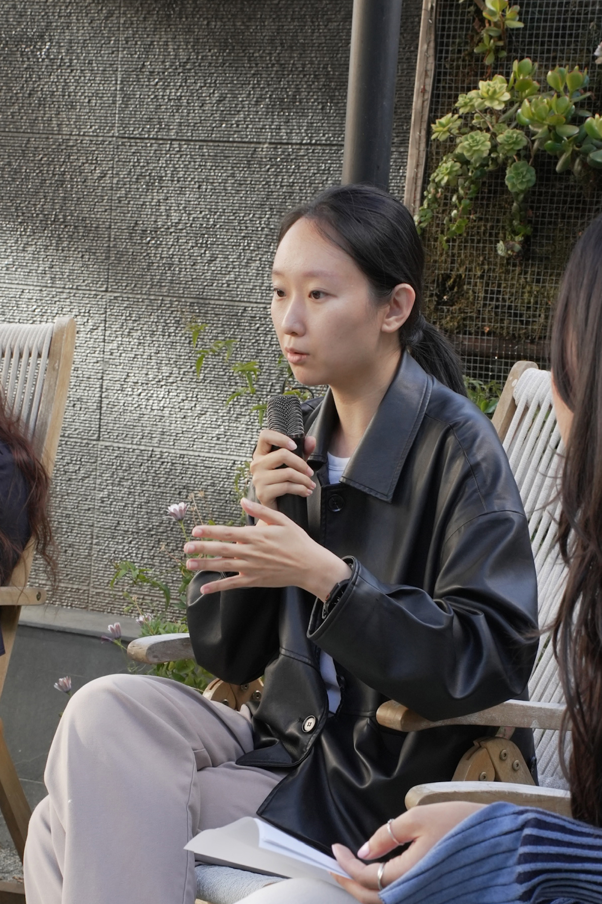

Founding Designer at Youlify
Leading product and brand design for an AI revenue cycle management platform helping US healthcare get paid.

Bio
My path began as a full-stack designer and creative technologist. Looking back, it maps naturally onto the double diamond.
In the first diverge, I built breadth across UI/UX, branding, typography, motion, print, games, art direction, and digital art.
That range taught me how disciplines inform one another, and it led me to converge on tech products and services, where design decisions ship and scale.
In the second diverge, I stepped into the roles that surround design. I worked as a product manager, an HCI researcher, and a front-end engineer, and each role deepened my understanding of how products get built.
The final converge brought me back to design with conviction. It is where I do my best work, and it remains the work I love most.
Education
Master of Integrated Innovation for Products & Services
Carnegie Mellon University
Pittsburgh, PA, USA
Bachelor of Fine Art Communication Design
Minor in Computer Science
Parsons School of Design at the New School
New York, NY, USA
Recent Experience
Leading product and brand design for an AI revenue cycle management platform helping US healthcare get paid.
Designed the brand and desktop & mobile software for an all-in-one edtech product for poker players.
Built high-quality front-end web interface from 0 to 1 using React. Collaborated with designers, ML engineers, and researchers, focusing on efficiency to ensure seamless integration between disciplines.
Led digital design across MoMA Design Store platforms and launched Rewards from 0 to 1.
Art directed brand and campaign work across fashion, beauty, and consumer clients.
Awards
iF Design Award
IDEA Award
IDA Award
Indigo Award
NY Digital Design Award
TITAN Health Award
Featured In
Fast Company
The Next Web
设计
Writing
Featured By CHI 2025, Workshop
Speaking
